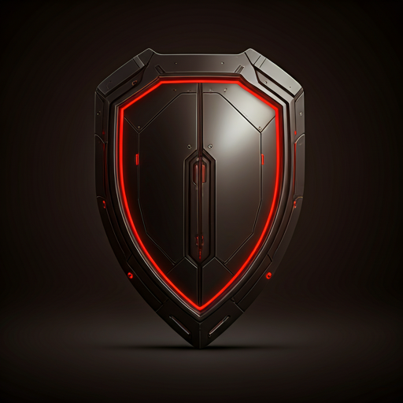

<section class="bg-background-light dark:bg-background-dark font-display text-white transition-colors duration-300" data-stitch-block="hero_section_transition_logic">
<div class="relative flex h-auto min-h-screen w-full flex-col group/design-root overflow-x-hidden">
<div class="layout-container flex h-full grow flex-col">
<!-- Top Navigation Bar -->
<div class="w-full flex justify-center py-5 border-b border-white/10">
<div class="layout-content-container flex flex-col w-full max-w-[1200px] flex-1">
<header class="flex items-center justify-between whitespace-nowrap px-6 md:px-10 py-3">
<div class="flex items-center gap-4 text-white">
<div class="size-8 text-primary">
<svg fill="none" viewbox="0 0 48 48" xmlns="http://www.w3.org/2000/svg">
<path d="M4 4H17.3334V17.3334H30.6666V30.6666H44V44H4V4Z" fill="currentColor"></path>
</svg>
</div>
<h2 class="text-white text-xl font-bold leading-tight tracking-tight uppercase">MGTS B2B</h2>
</div>
<div class="flex flex-1 justify-end gap-8 items-center">
<div class="hidden md:flex items-center gap-9">
<a class="text-white/70 hover:text-white text-sm font-medium transition-colors" href="#">Решения</a>
<a class="text-white/70 hover:text-white text-sm font-medium transition-colors" href="#">Услуги</a>
<a class="text-white/70 hover:text-white text-sm font-medium transition-colors" href="#">Поддержка</a>
</div>
<button class="flex min-w-[84px] cursor-pointer items-center justify-center rounded-lg h-10 px-5 bg-primary text-white text-sm font-bold tracking-wide hover:bg-blue-600 transition-all">
<span>Личный кабинет</span>
</button>
</div>
</header>
</div>
</div>
<!-- Page Heading Section -->
<div class="w-full flex justify-center py-8">
<div class="layout-content-container flex flex-col w-full max-w-[1200px] px-6 md:px-10">
<div class="flex flex-wrap justify-between items-end gap-4 border-l-4 border-primary pl-6">
<div class="flex min-w-72 flex-col gap-2">
<p class="text-white text-4xl font-black leading-tight tracking-tight">Переход между секциями</p>
<p class="text-white/50 text-base font-normal">Визуализация анимационной логики: Cloud Nodes → Cyber Shield</p>
</div>
<div class="flex gap-3">
<button class="flex items-center gap-2 px-6 h-12 bg-white/5 hover:bg-white/10 rounded-lg text-white font-bold transition-all border border-white/10">
<span class="material-symbols-outlined">settings_motion_mode</span>
<span>Настроить тайминг</span>
</button>
<button class="flex items-center gap-2 px-6 h-12 bg-primary hover:bg-blue-600 rounded-lg text-white font-bold transition-all">
<span class="material-symbols-outlined">play_arrow</span>
<span>Воспроизвести</span>
</button>
</div>
</div>
</div>
</div>
<!-- Transition Visualizer (Hero Stage) -->
<div class="w-full flex justify-center py-5">
<div class="layout-content-container flex flex-col w-full max-w-[1200px] px-6 md:px-10">
<div class="relative overflow-hidden rounded-xl border border-white/10 bg-[#050a0f] min-h-[560px] flex items-center justify-center group">
<!-- Background Logic Gradients -->
<div class="absolute inset-0 flex">
<div class="w-1/2 h-full bg-gradient-to-r from-[#0a1e36] to-transparent opacity-60"></div>
<div class="w-1/2 h-full bg-gradient-to-l from-[#1e0a0a] to-transparent opacity-40"></div>
</div>
<!-- Canvas Visuals -->
<div class="relative w-full h-full flex items-center justify-between px-20">
<!-- Cloud Asset (Outgoing - Left) -->
<div class="relative w-1/3 flex flex-col items-center opacity-30 blur-[2px] -translate-x-12 scale-95 transition-all">
<div class="relative w-64 h-64">
<div class="absolute inset-0 bg-primary/20 rounded-full animate-pulse"></div>

<!-- Motion vectors -->
<div class="absolute top-1/4 -left-10 w-12 h-0.5 bg-primary/40 motion-blur-trail"></div>
<div class="absolute bottom-1/3 -left-16 w-20 h-0.5 bg-primary/40 motion-blur-trail"></div>
</div>
<span class="mt-8 text-primary font-bold text-xs tracking-widest uppercase">Cloud Solutions (Out)</span>
</div>
<!-- Typography Transition Logic -->
<div class="absolute inset-0 flex flex-col items-center justify-center pointer-events-none">
<div class="relative h-20 w-full text-center">
<!-- Old text fading left -->
<h1 class="absolute inset-0 text-white/20 text-6xl font-black blur-sm -translate-x-20">Облачные решения</h1>
<!-- New text emerging from right -->
<h1 class="absolute inset-0 text-white text-6xl font-black translate-x-4">Кибербезопасность</h1>
<!-- Light sweep overlay on text -->
<div class="absolute inset-0 bg-gradient-to-r from-transparent via-white/20 to-transparent w-full h-full light-sweep translate-x-20"></div>
</div>
<p class="mt-4 text-white/40 text-lg">Защита цифрового периметра 24/7</p>
</div>
<!-- Cybersecurity Asset (Incoming - Right) -->
<div class="relative w-1/3 flex flex-col items-center translate-x-4 opacity-100 transition-all">
<div class="relative w-80 h-80 flex items-center justify-center">
<!-- Red pulse rings -->
<div class="absolute w-40 h-40 border-2 border-red-500/30 rounded-full scale-150 animate-ping"></div>
<div class="absolute w-64 h-64 bg-red-600/10 rounded-full blur-3xl"></div>

<!-- Logic callout -->
<div class="absolute -top-10 -right-20 bg-black/80 backdrop-blur-md border border-white/20 p-3 rounded-lg flex items-center gap-3">
<span class="material-symbols-outlined text-red-500 text-sm">visibility</span>
<span class="text-[10px] text-white/80 uppercase tracking-tighter">Opacity: 100% | Scale: 1.2x</span>
</div>
</div>
<span class="mt-8 text-red-500 font-bold text-xs tracking-widest uppercase">Cybersecurity (In)</span>
</div>
</div>
<!-- Progress Overlay Bar -->
<div class="absolute bottom-0 left-0 w-full p-8 bg-gradient-to-t from-black/80 to-transparent">
<div class="flex flex-col gap-3">
<div class="flex justify-between items-end">
<div class="flex flex-col">
<span class="text-xs text-white/40 uppercase tracking-widest font-bold">Текущий прогресс</span>
<span class="text-2xl font-black text-white">65%</span>
</div>
<div class="flex gap-4 items-center">
<span class="text-xs text-white/40 font-mono">FRAME: 156 / 240</span>
<div class="flex gap-2">
<button class="size-8 rounded-full bg-white/10 flex items-center justify-center hover:bg-white/20 transition-colors">
<span class="material-symbols-outlined text-sm">skip_previous</span>
</button>
<button class="size-8 rounded-full bg-primary flex items-center justify-center">
<span class="material-symbols-outlined text-sm">pause</span>
</button>
<button class="size-8 rounded-full bg-white/10 flex items-center justify-center hover:bg-white/20 transition-colors">
<span class="material-symbols-outlined text-sm">skip_next</span>
</button>
</div>
</div>
</div>
<div class="h-1.5 w-full bg-white/10 rounded-full overflow-hidden">
<div class="h-full bg-primary relative" style="width: 65%;">
<div class="absolute right-0 top-0 h-full w-2 bg-white shadow-[0_0_15px_white]"></div>
</div>
</div>
</div>
</div>
</div>
</div>
</div>
<!-- Stats & Technical Specs -->
<div class="w-full flex justify-center py-10">
<div class="layout-content-container flex flex-col w-full max-w-[1200px] px-6 md:px-10">
<div class="grid grid-cols-1 md:grid-cols-2 lg:grid-cols-4 gap-4">
<div class="flex flex-col gap-2 rounded-xl p-6 border border-white/10 bg-white/5 backdrop-blur-sm">
<div class="flex items-center gap-2 mb-2">
<span class="material-symbols-outlined text-primary text-xl">schedule</span>
<p class="text-white/60 text-sm font-medium">Длительность</p>
</div>
<p class="text-white text-3xl font-bold tracking-tight">850ms</p>
</div>
<div class="flex flex-col gap-2 rounded-xl p-6 border border-white/10 bg-white/5 backdrop-blur-sm">
<div class="flex items-center gap-2 mb-2">
<span class="material-symbols-outlined text-primary text-xl">insights</span>
<p class="text-white/60 text-sm font-medium">Easing Function</p>
</div>
<p class="text-white text-2xl font-bold tracking-tight leading-none py-1">Cubic-Bezier<br/><span class="text-xs text-white/30 font-mono font-normal">(0.42, 0, 0.58, 1)</span></p>
</div>
<div class="flex flex-col gap-2 rounded-xl p-6 border border-white/10 bg-white/5 backdrop-blur-sm">
<div class="flex items-center gap-2 mb-2">
<span class="material-symbols-outlined text-primary text-xl">blur_on</span>
<p class="text-white/60 text-sm font-medium">Motion Blur Radius</p>
</div>
<p class="text-white text-3xl font-bold tracking-tight">12px</p>
</div>
<div class="flex flex-col gap-2 rounded-xl p-6 border border-white/10 bg-white/5 backdrop-blur-sm">
<div class="flex items-center gap-2 mb-2">
<span class="material-symbols-outlined text-primary text-xl">auto_fix_high</span>
<p class="text-white/60 text-sm font-medium">Light Sweep Power</p>
</div>
<p class="text-white text-3xl font-bold tracking-tight">40% Alpha</p>
</div>
</div>
</div>
</div>
<!-- Annotation Cards -->
<div class="w-full flex justify-center py-5 mb-20">
<div class="layout-content-container flex flex-col w-full max-w-[1200px] px-6 md:px-10">
<h3 class="text-xl font-bold mb-6 flex items-center gap-3">
<span class="material-symbols-outlined">description</span>
                        Описание этапов перехода
                    </h3>
<div class="grid grid-cols-1 md:grid-cols-3 gap-6">
<div class="p-6 rounded-lg bg-white/5 border-l-4 border-primary">
<h4 class="font-bold text-white mb-2">0ms - 300ms</h4>
<p class="text-sm text-white/60 leading-relaxed">
                                Начало движения Cloud Nodes влево. Opacity снижается с 100% до 40%. Появление Motion Blur (step-up 0px to 12px).
                            </p>
</div>
<div class="p-6 rounded-lg bg-white/5 border-l-4 border-white/20">
<h4 class="font-bold text-white mb-2">300ms - 600ms</h4>
<p class="text-sm text-white/60 leading-relaxed">
                                Пик перекрестного затухания заголовков. "Light Sweep" эффект проходит по новому тексту слева направо.
                            </p>
</div>
<div class="p-6 rounded-lg bg-white/5 border-l-4 border-red-500">
<h4 class="font-bold text-white mb-2">600ms - 850ms</h4>
<p class="text-sm text-white/60 leading-relaxed">
                                Cybersecurity Shield достигает центральной позиции с небольшим "overshoot" (scale 1.1x → 1.0x). Красные импульсы активируются.
                            </p>
</div>
</div>
</div>
</div>
</div>
</div>
</section>
